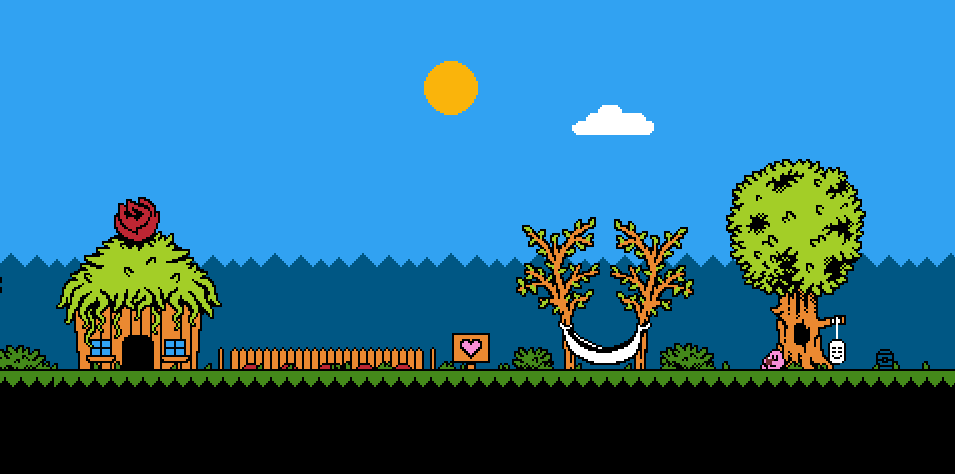
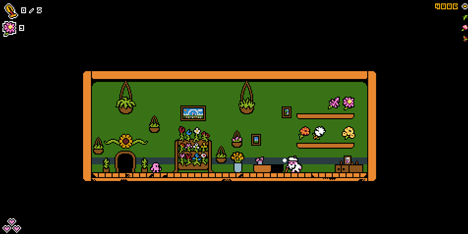
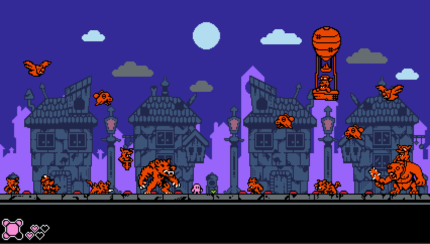
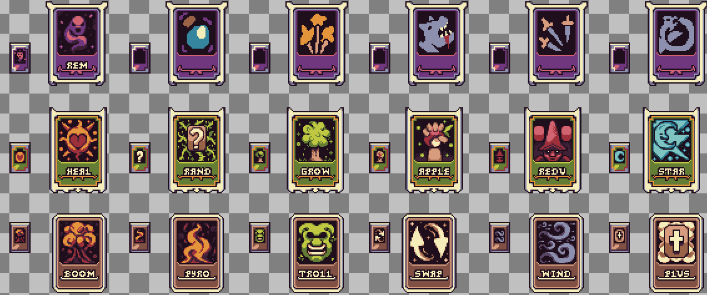

Hey! + Projects
Hi! I created this website because the Play Store verification asked me for one. I'd had it in mind for a long time anyway, but I kept putting it off out of laziness haha. Honestly, I don't really know what to write in this blog. I'm still working on CARE, adding meta progression, new items, new units and so on. The game is progressing slowly, but it's moving forward. I have lots of ideas to put in the game: secrets, hidden items, more swords and other cool stuff. This will be my first commercial game (on Steam and Android), so I really want to do it well, and I'll keep taking the time I need to get it done.
I'm also working on other projects like Chick Chick SMASH! (my first incremental) and Dark Elixir. For DE, I'm working on the cards and the combat design, as well as how the world will behave and its procedural generation. There will be public content about it soon. I don't have much more to say, other than thank you for reading the blog, and maybe a short explanation of why I'm not posting as often on my socials. I know it'll sound silly, but it's because of AI. Lately it hasn't sat well with me knowing that what I post is being used to train AIs on my work, so I decided not to publish several pieces I've made. It's not that I'll never post again, just not as often, or it'll be more private (I mean artworks; I'll keep posting gameplay of my games as usual). With that said, I'll leave some images of things I'm working on for CARE and Dark Elixir. And that's all. I hope you have a good day, afternoon or night. See you!




← Back to blog